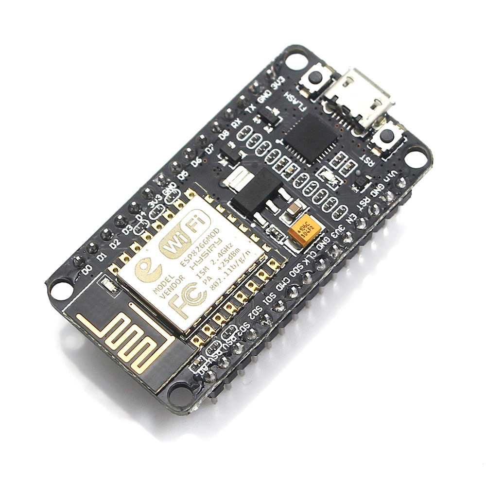
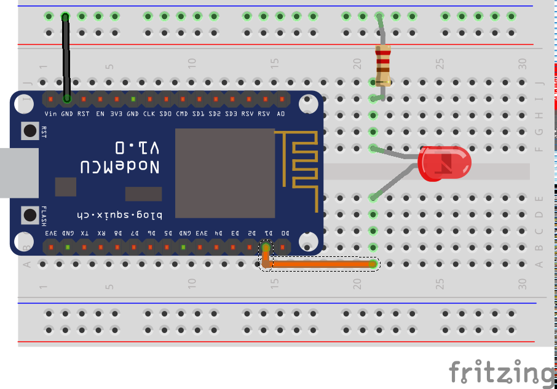
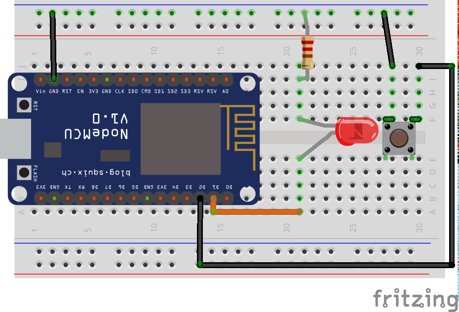

Hands On...
NodeMCU
Introduction
By: BEEVA Research Lab
What is NodeMCU?
"An open-source firmware and development kit that helps you to prototype your IOT product within a few Lua script lines."
A devkit


- Based on the Espressif SoC ESP8266.
- Low cost (under 5$).
- WiFi!
Set up
Requirements
- Git
- Python2.7
- Virtualenv
Installation
cd
mkdir projects
cd projects
git clone https://github.com/samuelmh/smh_nodemcu
cd smh_nodemcu
make install
Operative
Connect your board to the USB port and activate the environment.
cd
cd projects/venvs/smh_nodemcu
source bin/activate
Examples
nodemcu --help #Print help
nodemcu terminal #Connect to the interactive terminal
nodemcu terminal --help #Print the help related to the "terminal" command
nodemcu terminal --file=<file> #Send a file and connect to the terminal
nodemcu file ls #List the files stored in the device
nodemcu file add <origin> <destination> #Copy a file from the computer to the device
nodemcu file --help #Print the the help related to the "file" command
Flashing the firmware
Do not asume the board comes with your desired firmware.
It is a good practice to use a familiar one.
make flash-float-4mb-all
Hardware

Code
- Configure the device
- Set pin to high value
- Wait
- Set pin to low value
- Wait
- Repeat!
Hardware

Code
- Configure the device
- Set the LED to the button value
- Wait
- Repeat!
INTERRUPTIONS
Call a function asynchronously when the input value of a pin changes.
- up: rising edge
- down: falling edge
- both: both edges
- low: low level
- high: high level
Difference between edges and levels.
Code
- Configure the device
- Define the callback function
- Set the trigger
- Wait for an event!